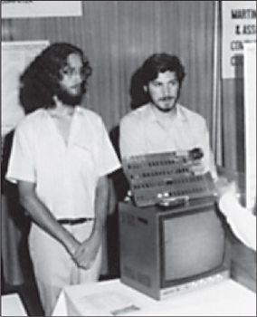

THE APPLE I
Turn On, Boot Up, Jack In ...

Daniel Kottke and Jobs with the Apple I at the Atlantic City computer fair, 1976
In San Francisco and the Santa Clara Valley during the late 1960s, various cultural currents flowed together. There was the technology revolution that began with the growth of military contractors and soon included electronics firms, microchip makers, video game designers, and computer companies. There was a hacker subculture—filled with wireheads, phreakers, cyberpunks, hobbyists, and just plain geeks—that included engineers who didn't conform to the HP mold and their kids who weren't attuned to the wavelengths of the subdivisions. There were quasi-academic groups doing studies on the effects of LSD; participants included Doug Engelbart of the Augmentation Research Center in Palo Alto, who later helped develop the computer mouse and graphical user interfaces, and Ken Kesey, who celebrated the drug with music-and-light shows featuring a house band that became the Grateful Dead. There was the hippie movement, born out of the Bay Area's beat generation, and the rebellious political activists, born out of the Free Speech Movement at Berkeley. Overlaid on it all were various self-fulfillment movements pursuing paths to personal enlightenment: Zen and Hinduism, meditation and yoga, primal scream and sensory deprivation, Esalen and est.
This fusion of flower power and processor power, enlightenment and technology, was embodied by Steve Jobs as he meditated in the mornings, audited physics classes at Stanford, worked nights at Atari, and dreamed of starting his own business. "There was just something going on here," he said, looking back at the time and place. "The best music came from here—the Grateful Dead, Jefferson Airplane, Joan Baez, Janis Joplin—and so did the integrated circuit, and things like the Whole Earth Catalog."
Initially the technologists and the hippies did not interface well. Many in the counterculture saw computers as ominous and Orwellian, the province of the Pentagon and the power structure. In The Myth of the Machine, the historian Lewis Mumford warned that computers were sucking away our freedom and destroying "life-enhancing values." An injunction on punch cards of the period—"Do not fold, spindle or mutilate"—became an ironic phrase of the antiwar Left.
But by the early 1970s a shift was under way. "Computing went from being dismissed as a tool of bureaucratic control to being embraced as a symbol of individual expression and liberation," John Markoff wrote in his study of the counterculture's convergence with the computer industry, What the Dormouse Said. It was an ethos lyrically expressed in Richard Brautigan's 1967 poem, "All Watched Over by Machines of Loving Grace," and the cyberdelic fusion was certified when Timothy Leary declared that personal computers had become the new LSD and years later revised his famous mantra to proclaim, "Turn on, boot up, jack in." The musician Bono, who later became a friend of Jobs, often discussed with him why those immersed in the rock-drugs-rebel counterculture of the Bay Area ended up helping to create the personal computer industry. "The people who invented the twenty-first century were pot-smoking, sandal-wearing hippies from the West Coast like Steve, because they saw differently," he said. "The hierarchical systems of the East Coast, England, Germany, and Japan do not encourage this different thinking. The sixties produced an anarchic mind-set that is great for imagining a world not yet in existence."
One person who encouraged the denizens of the counterculture to make common cause with the hackers was Stewart Brand. A puckish visionary who generated fun and ideas over many decades, Brand was a participant in one of the early sixties LSD studies in Palo Alto. He joined with his fellow subject Ken Kesey to produce the acid-celebrating Trips Festival, appeared in the opening scene of Tom Wolfe's The Electric Kool-Aid Acid Test, and worked with Doug Engelbart to create a seminal sound-and-light presentation of new technologies called the Mother of All Demos. "Most of our generation scorned computers as the embodiment of centralized control," Brand later noted. "But a tiny contingent—later called hackers—embraced computers and set about transforming them into tools of liberation. That turned out to be the true royal road to the future."
Brand ran the Whole Earth Truck Store, which began as a roving truck that sold useful tools and educational materials, and in 1968 he decided to extend its reach with the Whole Earth Catalog. On its first cover was the famous picture of Earth taken from space; its subtitle was "Access to Tools." The underlying philosophy was that technology could be our friend. Brand wrote on the first page of the first edition, "A realm of intimate, personal power is developing—power of the individual to conduct his own education, find his own inspiration, shape his own environment, and share his adventure with whoever is interested. Tools that aid this process are sought and promoted by the Whole Earth Catalog." Buckminster Fuller followed with a poem that began: "I see God in the instruments and mechanisms that work reliably."
Jobs became a Whole Earth fan. He was particularly taken by the final issue, which came out in 1971, when he was still in high school, and he brought it with him to college and then to the All One Farm. "On the back cover of their final issue" Jobs recalled, "was a photograph of an early morning country road, the kind you might find yourself hitchhiking on if you were so adventurous. Beneath it were the words: ‘Stay Hungry. Stay Foolish.'" Brand sees Jobs as one of the purest embodiments of the cultural mix that the catalog sought to celebrate. "Steve is right at the nexus of the counterculture and technology," he said. "He got the notion of tools for human use."
Brand's catalog was published with the help of the Portola Institute, a foundation dedicated to the fledgling field of computer education. The foundation also helped launch the People's Computer Company, which was not a company at all but a newsletter and organization with the motto "Computer power to the people." There were occasional Wednesday-night potluck dinners, and two of the regulars, Gordon French and Fred Moore, decided to create a more formal club where news about personal electronics could be shared.
They were energized by the arrival of the January 1975 issue of Popular Mechanics, which had on its cover the first personal computer kit, the Altair. The Altair wasn't much—just a $495 pile of parts that had to be soldered to a board that would then do little—but for hobbyists and hackers it heralded the dawn of a new era. Bill Gates and Paul Allen read the magazine and started working on a version of BASIC, an easy-to-use programming language, for the Altair. It also caught the attention of Jobs and Wozniak. And when an Altair kit arrived at the People's Computer Company, it became the centerpiece for the first meeting of the club that French and Moore had decided to launch.
The group became known as the Homebrew Computer Club, and it encapsulated the Whole Earth fusion between the counterculture and technology. It would become to the personal computer era something akin to what the Turk's Head coffeehouse was to the age of Dr. Johnson, a place where ideas were exchanged and disseminated. Moore wrote the flyer for the first meeting, held on March 5, 1975, in French's Menlo Park garage: "Are you building your own computer? Terminal, TV, typewriter?" it asked. "If so, you might like to come to a gathering of people with like-minded interests."
Allen Baum spotted the flyer on the HP bulletin board and called Wozniak, who agreed to go with him. "That night turned out to be one of the most important nights of my life," Wozniak recalled. About thirty other people showed up, spilling out of French's open garage door, and they took turns describing their interests. Wozniak, who later admitted to being extremely nervous, said he liked "video games, pay movies for hotels, scientific calculator design, and TV terminal design," according to the minutes prepared by Moore. There was a demonstration of the new Altair, but more important to Wozniak was seeing the specification sheet for a microprocessor.
As he thought about the microprocessor—a chip that had an entire central processing unit on it—he had an insight. He had been designing a terminal, with a keyboard and monitor, that would connect to a distant minicomputer. Using a microprocessor, he could put some of the capacity of the minicomputer inside the terminal itself, so it could become a small stand-alone computer on a desktop. It was an enduring idea: keyboard, screen, and computer all in one integrated personal package. "This whole vision of a personal computer just popped into my head," he said. "That night, I started to sketch out on paper what would later become known as the Apple I."
At first he planned to use the same microprocessor that was in the Altair, an Intel 8080. But each of those "cost almost more than my monthly rent," so he looked for an alternative. He found one in the Motorola 6800, which a friend at HP was able to get for $40 apiece. Then he discovered a chip made by MOS Technologies that was electronically the same but cost only $20. It would make his machine affordable, but it would carry a long-term cost. Intel's chips ended up becoming the industry standard, which would haunt Apple when its computers were incompatible with it.
After work each day, Wozniak would go home for a TV dinner and then return to HP to moonlight on his computer. He spread out the parts in his cubicle, figured out their placement, and soldered them onto his motherboard. Then he began writing the software that would get the microprocessor to display images on the screen. Because he could not afford to pay for computer time, he wrote the code by hand. After a couple of months he was ready to test it. "I typed a few keys on the keyboard and I was shocked! The letters were displayed on the screen." It was Sunday, June 29, 1975, a milestone for the personal computer. "It was the first time in history," Wozniak later said, "anyone had typed a character on a keyboard and seen it show up on their own computer's screen right in front of them."
Jobs was impressed. He peppered Wozniak with questions: Could the computer ever be networked? Was it possible to add a disk for memory storage? He also began to help Woz get components. Particularly important were the dynamic random-access memory chips. Jobs made a few calls and was able to score some from Intel for free. "Steve is just that sort of person," said Wozniak. "I mean, he knew how to talk to a sales representative. I could never have done that. I'm too shy."
Jobs began to accompany Wozniak to Homebrew meetings, carrying the TV monitor and helping to set things up. The meetings now attracted more than one hundred enthusiasts and had been moved to the auditorium of the Stanford Linear Accelerator Center. Presiding with a pointer and a free-form manner was Lee Felsenstein, another embodiment of the merger between the world of computing and the counterculture. He was an engineering school dropout, a participant in the Free Speech Movement, and an antiwar activist. He had written for the alternative newspaper Berkeley Barb and then gone back to being a computer engineer.
Woz was usually too shy to talk in the meetings, but people would gather around his machine afterward, and he would proudly show off his progress. Moore had tried to instill in the Homebrew an ethos of swapping and sharing rather than commerce. "The theme of the club," Woz said, "was ‘Give to help others.'" It was an expression of the hacker ethic that information should be free and all authority mistrusted. "I designed the Apple I because I wanted to give it away for free to other people," said Wozniak.
This was not an outlook that Bill Gates embraced. After he and Paul Allen had completed their BASIC interpreter for the Altair, Gates was appalled that members of the Homebrew were making copies of it and sharing it without paying him. So he wrote what would become a famous letter to the club: "As the majority of hobbyists must be aware, most of you steal your software. Is this fair? ... One thing you do is prevent good software from being written. Who can afford to do professional work for nothing? ... I would appreciate letters from anyone who wants to pay up."
Steve Jobs, similarly, did not embrace the notion that Wozniak's creations, be it a Blue Box or a computer, wanted to be free. So he convinced Wozniak to stop giving away copies of his schematics. Most people didn't have time to build it themselves anyway, Jobs argued. "Why don't we build and sell printed circuit boards to them?" It was an example of their symbiosis. "Every time I'd design something great, Steve would find a way to make money for us," said Wozniak. Wozniak admitted that he would have never thought of doing that on his own. "It never crossed my mind to sell computers. It was Steve who said, ‘Let's hold them in the air and sell a few.'"
Jobs worked out a plan to pay a guy he knew at Atari to draw the circuit boards and then print up fifty or so. That would cost about $1,000, plus the fee to the designer. They could sell them for $40 apiece and perhaps clear a profit of $700. Wozniak was dubious that they could sell them all. "I didn't see how we would make our money back," he recalled. He was already in trouble with his landlord for bouncing checks and now had to pay each month in cash.
Jobs knew how to appeal to Wozniak. He didn't argue that they were sure to make money, but instead that they would have a fun adventure. "Even if we lose our money, we'll have a company," said Jobs as they were driving in his Volkswagen bus. "For once in our lives, we'll have a company." This was enticing to Wozniak, even more than any prospect of getting rich. He recalled, "I was excited to think about us like that. To be two best friends starting a company. Wow. I knew right then that I'd do it. How could I not?"
In order to raise the money they needed, Wozniak sold his HP 65 calculator for $500, though the buyer ended up stiffing him for half of that. For his part, Jobs sold his Volkswagen bus for $1,500. But the person who bought it came to find him two weeks later and said the engine had broken down, and Jobs agreed to pay for half of the repairs. Despite these little setbacks, they now had, with their own small savings thrown in, about $1,300 in working capital, the design for a product, and a plan. They would start their own computer company.
Now that they had decided to start a business, they needed a name. Jobs had gone for another visit to the All One Farm, where he had been pruning the Gravenstein apple trees, and Wozniak picked him up at the airport. On the ride down to Los Altos, they bandied around options. They considered some typical tech words, such as Matrix, and some neologisms, such as Executek, and some straightforward boring names, like Personal Computers Inc. The deadline for deciding was the next day, when Jobs wanted to start filing the papers. Finally Jobs proposed Apple Computer. "I was on one of my fruitarian diets," he explained. "I had just come back from the apple farm. It sounded fun, spirited, and not intimidating. Apple took the edge off the word ‘computer.' Plus, it would get us ahead of Atari in the phone book." He told Wozniak that if a better name did not hit them by the next afternoon, they would just stick with Apple. And they did.
Apple. It was a smart choice. The word instantly signaled friendliness and simplicity. It managed to be both slightly off-beat and as normal as a slice of pie. There was a whiff of counterculture, back-to-nature earthiness to it, yet nothing could be more American. And the two words together—Apple Computer—provided an amusing disjuncture. "It doesn't quite make sense," said Mike Markkula, who soon thereafter became the first chairman of the new company. "So it forces your brain to dwell on it. Apple and computers, that doesn't go together! So it helped us grow brand awareness."
Wozniak was not yet ready to commit full-time. He was an HP company man at heart, or so he thought, and he wanted to keep his day job there. Jobs realized he needed an ally to help corral Wozniak and adjudicate if there was a disagreement. So he enlisted his friend Ron Wayne, the middle-aged engineer at Atari who had once started a slot machine company.
Wayne knew that it would not be easy to make Wozniak quit HP, nor was it necessary right away. Instead the key was to convince him that his computer designs would be owned by the Apple partnership. "Woz had a parental attitude toward the circuits he developed, and he wanted to be able to use them in other applications or let HP use them," Wayne said. "Jobs and I realized that these circuits would be the core of Apple. We spent two hours in a roundtable discussion at my apartment, and I was able to get Woz to accept this." His argument was that a great engineer would be remembered only if he teamed with a great marketer, and this required him to commit his designs to the partnership. Jobs was so impressed and grateful that he offered Wayne a 10% stake in the new partnership, turning him into a tie-breaker if Jobs and Wozniak disagreed over an issue.
"They were very different, but they made a powerful team," said Wayne. Jobs at times seemed to be driven by demons, while Woz seemed a naïf who was toyed with by angels. Jobs had a bravado that helped him get things done, occasionally by manipulating people. He could be charismatic, even mesmerizing, but also cold and brutal. Wozniak, in contrast, was shy and socially awkward, which made him seem childishly sweet. "Woz is very bright in some areas, but he's almost like a savant, since he was so stunted when it came to dealing with people he didn't know," said Jobs. "We were a good pair." It helped that Jobs was awed by Wozniak's engineering wizardry, and Wozniak was awed by Jobs's business drive. "I never wanted to deal with people and step on toes, but Steve could call up people he didn't know and make them do things," Wozniak recalled. "He could be rough on people he didn't think were smart, but he never treated me rudely, even in later years when maybe I couldn't answer a question as well as he wanted."
Even after Wozniak became convinced that his new computer design should become the property of the Apple partnership, he felt that he had to offer it first to HP, since he was working there. "I believed it was my duty to tell HP about what I had designed while working for them. That was the right thing and the ethical thing." So he demonstrated it to his managers in the spring of 1976. The senior executive at the meeting was impressed, and seemed torn, but he finally said it was not something that HP could develop. It was a hobbyist product, at least for now, and didn't fit into the company's high-quality market segments. "I was disappointed," Wozniak recalled, "but now I was free to enter into the Apple partnership."
On April 1, 1976, Jobs and Wozniak went to Wayne's apartment in Mountain View to draw up the partnership agreement. Wayne said he had some experience "writing in legalese," so he composed the three-page document himself. His "legalese" got the better of him. Paragraphs began with various flourishes: "Be it noted herewith ... Be it further noted herewith ... Now the refore [sic], in consideration of the respective assignments of interests ..." But the division of shares and profits was clear—45%-45%-10%—and it was stipulated that any expenditures of more than $100 would require agreement of at least two of the partners. Also, the responsibilities were spelled out. "Wozniak shall assume both general and major responsibility for the conduct of Electrical Engineering; Jobs shall assume general responsibility for Electrical Engineering and Marketing, and Wayne shall assume major responsibility for Mechanical Engineering and Documentation." Jobs signed in lowercase script, Wozniak in careful cursive, and Wayne in an illegible squiggle.
Wayne then got cold feet. As Jobs started planning to borrow and spend more money, he recalled the failure of his own company. He didn't want to go through that again. Jobs and Wozniak had no personal assets, but Wayne (who worried about a global financial Armageddon) kept gold coins hidden in his mattress. Because they had structured Apple as a simple partnership rather than a corporation, the partners would be personally liable for the debts, and Wayne was afraid potential creditors would go after him. So he returned to the Santa Clara County office just eleven days later with a "statement of withdrawal" and an amendment to the partnership agreement. "By virtue of a re-assessment of understandings by and between all parties," it began, "Wayne shall hereinafter cease to function in the status of ‘Partner.'" It noted that in payment for his 10% of the company, he received $800, and shortly afterward $1,500 more.
Had he stayed on and kept his 10% stake, at the end of 2010 it would have been worth approximately $2.6 billion. Instead he was then living alone in a small home in Pahrump, Nevada, where he played the penny slot machines and lived off his social security check. He later claimed he had no regrets. "I made the best decision for me at the time. Both of them were real whirlwinds, and I knew my stomach and it wasn't ready for such a ride."
Jobs and Wozniak took the stage together for a presentation to the Homebrew Computer Club shortly after they signed Apple into existence. Wozniak held up one of their newly produced circuit boards and described the microprocessor, the eight kilobytes of memory, and the version of BASIC he had written. He also emphasized what he called the main thing: "a human-typable keyboard instead of a stupid, cryptic front panel with a bunch of lights and switches." Then it was Jobs's turn. He pointed out that the Apple, unlike the Altair, had all the essential components built in. Then he challenged them with a question: How much would people be willing to pay for such a wonderful machine? He was trying to get them to see the amazing value of the Apple. It was a rhetorical flourish he would use at product presentations over the ensuing decades.
The audience was not very impressed. The Apple had a cut-rate microprocessor, not the Intel 8080. But one important person stayed behind to hear more. His name was Paul Terrell, and in 1975 he had opened a computer store, which he dubbed the Byte Shop, on Camino Real in Menlo Park. Now, a year later, he had three stores and visions of building a national chain. Jobs was thrilled to give him a private demo. "Take a look at this," he said. "You're going to like what you see." Terrell was impressed enough to hand Jobs and Woz his card. "Keep in touch," he said.
"I'm keeping in touch," Jobs announced the next day when he walked barefoot into the Byte Shop. He made the sale. Terrell agreed to order fifty computers. But there was a condition: He didn't want just $50 printed circuit boards, for which customers would then have to buy all the chips and do the assembly. That might appeal to a few hard-core hobbyists, but not to most customers. Instead he wanted the boards to be fully assembled. For that he was willing to pay about $500 apiece, cash on delivery.
Jobs immediately called Wozniak at HP. "Are you sitting down?" he asked. Wozniak said he wasn't. Jobs nevertheless proceeded to give him the news. "I was shocked, just completely shocked," Wozniak recalled. "I will never forget that moment."
To fill the order, they needed about $15,000 worth of parts. Allen Baum, the third prankster from Homestead High, and his father agreed to loan them $5,000. Jobs tried to borrow more from a bank in Los Altos, but the manager looked at him and, not surprisingly, declined. He went to Haltek Supply and offered an equity stake in Apple in return for the parts, but the owner decided they were "a couple of young, scruffy-looking guys," and declined. Alcorn at Atari would sell them chips only if they paid cash up front. Finally, Jobs was able to convince the manager of Cramer Electronics to call Paul Terrell to confirm that he had really committed to a $25,000 order. Terrell was at a conference when he heard over a loudspeaker that he had an emergency call (Jobs had been persistent). The Cramer manager told him that two scruffy kids had just walked in waving an order from the Byte Shop. Was it real? Terrell confirmed that it was, and the store agreed to front Jobs the parts on thirty-day credit.
The Jobs house in Los Altos became the assembly point for the fifty Apple I boards that had to be delivered to the Byte Shop within thirty days, when the payment for the parts would come due. All available hands were enlisted: Jobs and Wozniak, plus Daniel Kottke, his ex-girlfriend Elizabeth Holmes (who had broken away from the cult she'd joined), and Jobs's pregnant sister, Patty. Her vacated bedroom as well as the kitchen table and garage were commandeered as work space. Holmes, who had taken jewelry classes, was given the task of soldering chips. "Most I did well, but I got flux on a few of them," she recalled. This didn't please Jobs. "We don't have a chip to spare," he railed, correctly. He shifted her to bookkeeping and paperwork at the kitchen table, and he did the soldering himself. When they completed a board, they would hand it off to Wozniak. "I would plug each assembled board into the TV and keyboard to test it to see if it worked," he said. "If it did, I put it in a box. If it didn't, I'd figure what pin hadn't gotten into the socket right."
Paul Jobs suspended his sideline of repairing old cars so that the Apple team could have the whole garage. He put in a long old workbench, hung a schematic of the computer on the new plasterboard wall he built, and set up rows of labeled drawers for the components. He also built a burn box bathed in heat lamps so the computer boards could be tested by running overnight at high temperatures. When there was the occasional eruption of temper, an occurrence not uncommon around his son, Paul would impart some of his calm. "What's the matter?" he would say. "You got a feather up your ass?" In return he occasionally asked to borrow back the TV set so he could watch the end of a football game. During some of these breaks, Jobs and Kottke would go outside and play guitar on the lawn.
Clara Jobs didn't mind losing most of her house to piles of parts and houseguests, but she was frustrated by her son's increasingly quirky diets. "She would roll her eyes at his latest eating obsessions," recalled Holmes. "She just wanted him to be healthy, and he would be making weird pronouncements like, ‘I'm a fruitarian and I will only eat leaves picked by virgins in the moonlight.'"
After a dozen assembled boards had been approved by Wozniak, Jobs drove them over to the Byte Shop. Terrell was a bit taken aback. There was no power supply, case, monitor, or keyboard. He had expected something more finished. But Jobs stared him down, and he agreed to take delivery and pay.
After thirty days Apple was on the verge of being profitable. "We were able to build the boards more cheaply than we thought, because I got a good deal on parts," Jobs recalled. "So the fifty we sold to the Byte Shop almost paid for all the material we needed to make a hundred boards." Now they could make a real profit by selling the remaining fifty to their friends and Homebrew compatriots.
Elizabeth Holmes officially became the part-time bookkeeper at $4 an hour, driving down from San Francisco once a week and figuring out how to port Jobs's checkbook into a ledger. In order to make Apple seem like a real company, Jobs hired an answering service, which would relay messages to his mother. Ron Wayne drew a logo, using the ornate line-drawing style of Victorian illustrated fiction, that featured Newton sitting under a tree framed by a quote from Wordsworth: "A mind forever voyaging through strange seas of thought, alone." It was a rather odd motto, one that fit Wayne's self-image more than Apple Computer. Perhaps a better Wordsworth line would have been the poet's description of those involved in the start of the French Revolution: "Bliss was it in that dawn to be alive / But to be young was very heaven!" As Wozniak later exulted, "We were participating in the biggest revolution that had ever happened, I thought. I was so happy to be a part of it."
Woz had already begun thinking about the next version of the machine, so they started calling their current model the Apple I. Jobs and Woz would drive up and down Camino Real trying to get the electronics stores to sell it. In addition to the fifty sold by the Byte Shop and almost fifty sold to friends, they were building another hundred for retail outlets. Not surprisingly, they had contradictory impulses: Wozniak wanted to sell them for about what it cost to build them, but Jobs wanted to make a serious profit. Jobs prevailed. He picked a retail price that was about three times what it cost to build the boards and a 33% markup over the $500 wholesale price that Terrell and other stores paid. The result was $666.66. "I was always into repeating digits," Wozniak said. "The phone number for my dial-a-joke service was 255-6666." Neither of them knew that in the Book of Revelation 666 symbolized the "number of the beast," but they soon were faced with complaints, especially after 666 was featured in that year's hit movie, The Omen. (In 2010 one of the original Apple I computers was sold at auction by Christie's for $213,000.)
The first feature story on the new machine appeared in the July 1976 issue of Interface, a now-defunct hobbyist magazine. Jobs and friends were still making them by hand in his house, but the article referred to him as the director of marketing and "a former private consultant to Atari." It made Apple sound like a real company. "Steve communicates with many of the computer clubs to keep his finger on the heartbeat of this young industry," the article reported, and it quoted him explaining, "If we can rap about their needs, feelings and motivations, we can respond appropriately by giving them what they want."
By this time they had other competitors, in addition to the Altair, most notably the IMSAI 8080 and Processor Technology Corporation's SOL-20. The latter was designed by Lee Felsenstein and Gordon French of the Homebrew Computer Club. They all had the chance to go on display during Labor Day weekend of 1976, at the first annual Personal Computer Festival, held in a tired hotel on the decaying boardwalk of Atlantic City, New Jersey. Jobs and Wozniak took a TWA flight to Philadelphia, cradling one cigar box with the Apple I and another with the prototype for the successor that Woz was working on. Sitting in the row behind them was Felsenstein, who looked at the Apple I and pronounced it "thoroughly unimpressive." Wozniak was unnerved by the conversation in the row behind him. "We could hear them talking in advanced business talk," he recalled, "using businesslike acronyms we'd never heard before."
Wozniak spent most of his time in their hotel room, tweaking his new prototype. He was too shy to stand at the card table that Apple had been assigned near the back of the exhibition hall. Daniel Kottke had taken the train down from Manhattan, where he was now attending Columbia, and he manned the table while Jobs walked the floor to inspect the competition. What he saw did not impress him. Wozniak, he felt reassured, was the best circuit engineer, and the Apple I (and surely its successor) could beat the competition in terms of functionality. However, the SOL-20 was better looking. It had a sleek metal case, a keyboard, a power supply, and cables. It looked as if it had been produced by grown-ups. The Apple I, on the other hand, appeared as scruffy as its creators.